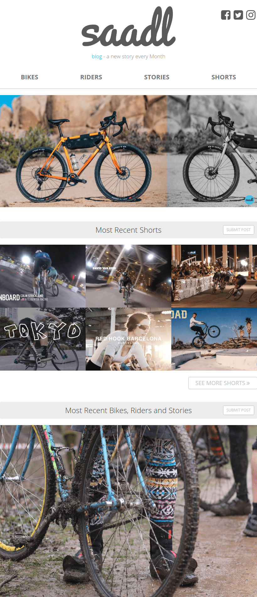

Apercu
Voici la structure du blog

Ils existent 2 types d'articles: les articles courts et les articles réguliers
Les articles courts
Ils sont faciles à écrire, rapides à lire et plus fréquents
Pour ces raisons ils sont plus petits sur la page d'accueil mais sont positionner en premier

En survolant une photo avec sa souris, le type de contenu est indiqué: video ou photos

Exemple d'un article court
Les articles réguliers
Ils sont plus compliqués à écrire, plus long à lire et moins fréquents
Pour ces raisons ils prennent plus de place et sont positionnés en second

Exemple d'un article régulier
A la fin de chaque article, le rédacteur et le photographe sont crédités. De ce fait, des visiteurs rédigent des histoires et nous les envoient pour être publiés

De larges boutons de partage pour maximiser les partages sur les réseaux sociaux
Pour garder l'attention du visiteur, chaque article se termine par la suggestion d'un autre article: le précédent de la même catégorie


 Web development
Web development
 Community management
Community management
 Photographie
Photographie
 Manager de projet depuis 2015.
Manager de projet depuis 2015.


 sur saadl
sur saadl